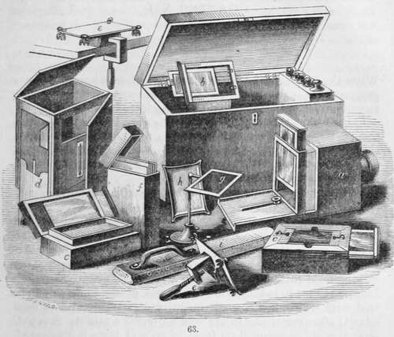
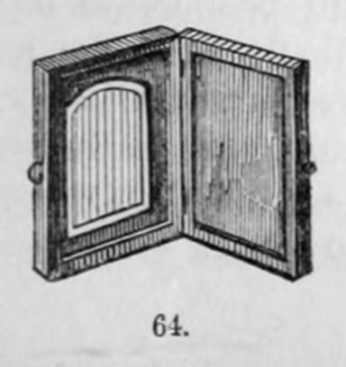
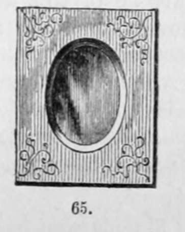

Section VI. Sunplification Of The Daguerreotype
Description
This section is from the book "A Manual Of Photography", by Robert Hunt. Also available from Amazon: A Manual of Photography.
Section VI. Sunplification Of The Daguerreotype
The following experiments for the sunplification of the daguerreotype processes, were made by me many years since ; I have therefore retained such portions of the original paper as do not appear to be entirely uninstructive.
Procure a well-plenished copper plate of the required size, and polish it, first with pumice-stone and water, than with snake-stone, and bring it up to a mirror surface with either rotten-stone or jewellers' rouge. Plates can be purchased in a high state of preparation from the engravers. Having prepared the copper plate well, rub it with salt and water, and then with some silvering powder. No kind answers better than that used by clock-makers to silver dial-plates. It is composed of one part of well-washed chloride of silver, five parts of cream of tartar, and four parts of table salt. This powder must be kept in a dark vessel, and in a dry place. For a plate six inches by five as much of this composition as can be taken up on a shilling is sufficient. It is to be laid in the centre of the copper, and the fingers being wetted, to be quickly rubbed over every part of the plate, adding occasionally a little damp salt. The copper being covered with the silvering, it is to be speedily well washed in water, in which a little soda is dissolved, and as soon as the surface is of a fine silvery whiteness it is to be dried with a very clean warm cloth. In this state the plates may be kept for use. The first process is to expose the plate to the heat of a spirit flame, until the silvered surface becomes of a well-defined golden-yellow colour : then when the plate is cold, take a piece of cotton, dipped in very dilute nitric acid, and rub lightly over it until the white hue is restored, and dry it with very soft clean cloths. The plate is then immersed in a weak solution of the iodide of potassium, in which a small portion of iodine is dissolved. The silver is thus converted, over its surface, into an iodide of silver; and in this state it is exposed to the solar rays, which blacken it. When dry it is to be again polished, either with dilute acid or a solution of carbonate of soda, and afterwards with dry cotton, and the smallest possible portion of prepared chalk ; by this means a surface of the highest polish is produced. The rationale of this process is, in the first place, the heat applied drives off any adhering acid, and effects more perfect union between the copper and silver, so as to enable it to bear the subsequent processes. The first yellow surface appears to be an oxide of silver, with, possibly, a minute quantity of copper in combination, which being removed leaves a surface chemically pure. Copper plates may also be very beautifully silvered by galvanic agency, by which we are enabled to increase the thickness of the silver to any extent, and the necessity for the heating process is removed, the silver being absolutely pure. The best and simplest mode is to divide an earthenware vessel with a diaphragm of membrane or paper: one side should be filled with a very dilute solution of sulphuric acid, and the other with either a solution of ferroprussiate of potash, or chloride of sodium, saturated with chloride of silver. The copper plate, varnished on one side, is united, by means of a copper wire, with a plate of zinc. The zinc plate being immersed in the acid, and the copper in the salt, a weak electric current is generated, which precipitates the silver in a very uniform manner over the entire surface.
At a very early stage of my inquiries I found that the influence of all the rays, excepting the yellow, was to loosen the adhesion of the iodized surface, with the under layer of unaffected silver. When this changed film was removed by rubbing, the silver beneath always exhibited the most perfect lustre, and I have hence invariably adopted this mode of polishing my daguerreotype plates. The required surface is thus produced with one-third the labour, and a very great saving of time; besides which, the silver is in a much more susceptible state for receiving the vapour of the iodine. The plate being thus prepared, we proceed in the manner before directed.
It is somewhat singular, that on the first notice of Daguerre's pictures, long before the publication of his process, when I learnt that they were on " hard polished tablets," I entertained the idea that plates of copper thus silvered were oxidized, and then acted on by iodine. I applied the iodine both in solution and vapour; but, of course, as the mercury was not used, I failed to effect any perfect pictures. It is, however, worthy of remark, that on one occasion, having placed a piece of silvered copper in a trough containing a weak solution of iodine, with some leaves of hemlock superimposed, these being kept close by means of a piece of glass over all the exposed portions, the silver was completely removed, and the copper abraded to a considerable extent, while beneath the leaves the silver was scarcely affected. I thus procured a very beautiful etching, the figures being in high relief. This was frequently repeated with success ; but other inquiries having drawn off my attention, the process has been long neglected, although I am convinced it is capable of being turned to much useful account.
In November, 1839, I pursued a series of experiments with bromine, but no very definite advantage was obtained. Some curious effects which I noticed at that time are worthy of notice. I copy the remarks made in my memorandum-book at the time.
4. Exposed a plate to the vapour of bromine : it assumed a leaden-gray colour, which blackened by light very readily. Exposed this to mercury without much improving the effect or altering the lights. Upon immersing this plate in a solution of the muriate of soda, the parts unacted on by light became a jet black, whilst the parts on which light had acted were dissolved off, leaving a clean coating of silver. The effect was most decisive—a black picture on a white ground.
8. Allowed three plates to assume—the first a straw-yellow, the second a steel-blue, and the third a dull blue, and examined their sensitiveness ; the plate which had arrived at the dull blue colour appeared to be the most sensitive.
These experiments, which were then pursued with a view to produce more permanent pictures — to fix the mercury, or to engrave the plate—were, however, abandoned, and have not yet been resumed, although it is desirable that some one should turn his attention to this point. On one occasion, after having prepared a picture according to the process prescribed by Daguerre, I placed it, without removing the iodine, in a vessel of chlorine; the picture was obliterated, and very speedily blackened. On exposing this black plate to light, it almost instantaneously whitened. This is mentioned to show the extent of curious subjects which photography opens out for examination.
The apparatus for the daguerreotype shown in the vignette may be enumerated with advantage.
a. Is the camera obscura, with the screen upon which the image is seen, and by which the focus is adjusted, partly raised; and when this is accurately determined a screw is shown by which it is secured. b. Silver plate and edges for the same.
c c. Are bromide and iodine boxes of walnut, enclosing each a stout porcelain pan : each pan is furnished with an air-tight glass cover. On the upper edge of each box is a groove for holding the plate. On withdrawing the glass cover of the iodine pan, the plate is exposed to its action, and the colour produced is observed by holding a sheet of white paper in such a position that its reflection may be seen on the plate, which enables the operator to judge of the progress of the operation. When the plate has obtained the required colour, the glass cover is pushed in, so as to cover the iodine pan, and the cover over the bromine pan is withdrawn. The plate is now removed from the iodine box and placed over the bromine box, and the colour observed as before. When the plate has received the proper amount of bromine, which is perceptible by the colour, the cover of the bromine pan is pushed in, and the plate is again placed over the iodine pan for a few seconds, until the ultimate colour required is produced, and it is then ready for removal to the camera.
d. Improved mercury box, of walnut, with sliding legs, iron cistern, glass windows for inspecting the development of the picture, mounted with thermometer for ascertaining the temperature of the mercury.
e e. Are plate holders, with clamp for securing the same.
f. Is a box for holding the daguerreotype plates.
g. A levelling stand, used in the fixing process, see page 245.
h. A flat peculiar dish for washing, see fig. 1, page 13.
i. Is a hand-buff.
The pictures being completed, they are mounted in morocco or ornamented cases, such as are shown below.

Continue to:
- prev: Section V. Fixing The Daguerreotype Image
- Table of Contents
- next: Chapter VII. The Collodion Process